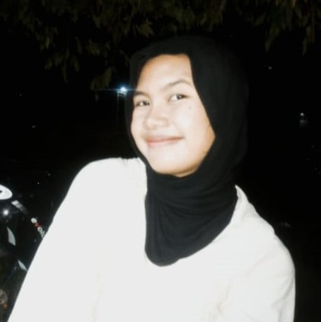

Fedriko👌
1062412
Fedriko adalah seorang mahasiswa yang tertarik pada bidang matematika diskrit dan aplikasi komputasionalnya. Dia bersemangat untuk berbagi pengetahuan dan membantu mahasiswa lain dalam memahami konsep-konsep kompleks.

Nabilah Aprilia🤘
1062421
Nabilah Aprilia adalah seorang penggemar matematika yang suka menyelesaikan masalah kompleks. Dengan keahlian analitisnya, dia berusaha untuk mendukung tim dalam membuat materi yang mudah dipahami oleh semua mahasiswa.
Ahmad Sobari👍
1062403
Ahmad Sobari memiliki minat dalam pemrograman dan matematika. Dia telah berkontribusi dalam pengembangan berbagai proyek dan selalu mencari cara untuk membuat pembelajaran matematika lebih menyenangkan dan menarik.